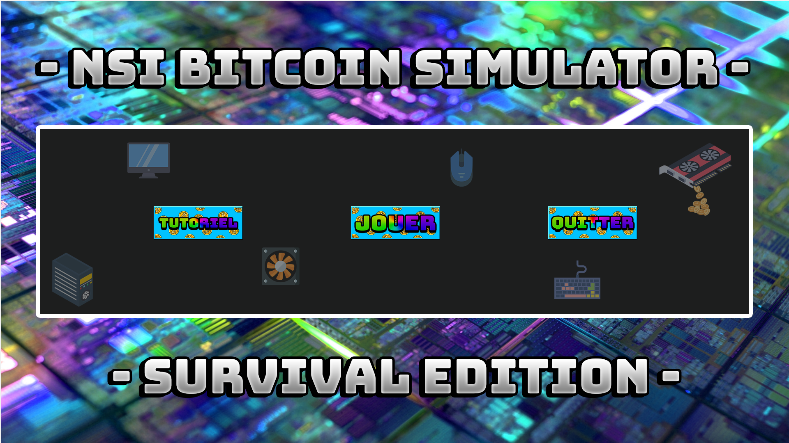
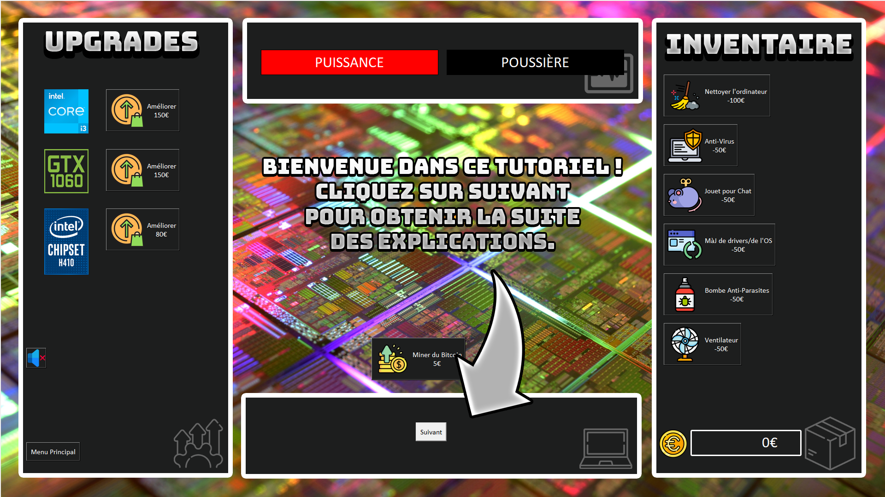
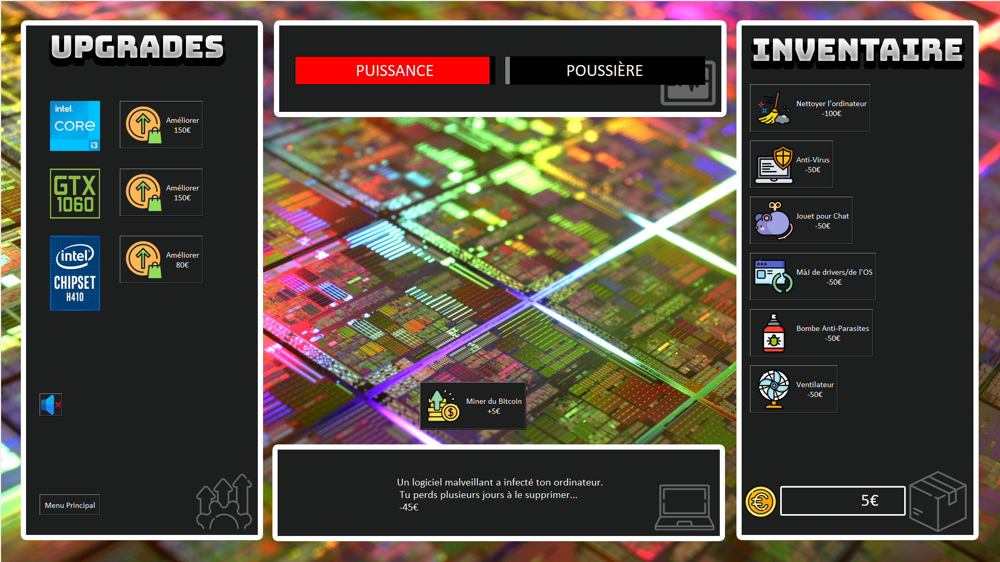

The purpose was to create a little incremental game, with 2 of my
friends, when we were in middle school.
During two or three months, we managed to setup a little graphic
interface and a few functionnalities for our game.
The game is automatically downloading the Python modules necessary for
its
proper functioning, and it is fully scalable, allowing it to accept a
vast majority of screen resolutions.
I led the group, providing instructions to my teammates during the
execution of the project. I made the game's textures on Photoshop, and I
created the main part of the code.
The main menu
The beginning of the tutorial
A preview of a game
If I have time, I am actually willing to rework the graphic interface, especially it's design, to make a more modern, less childish look.